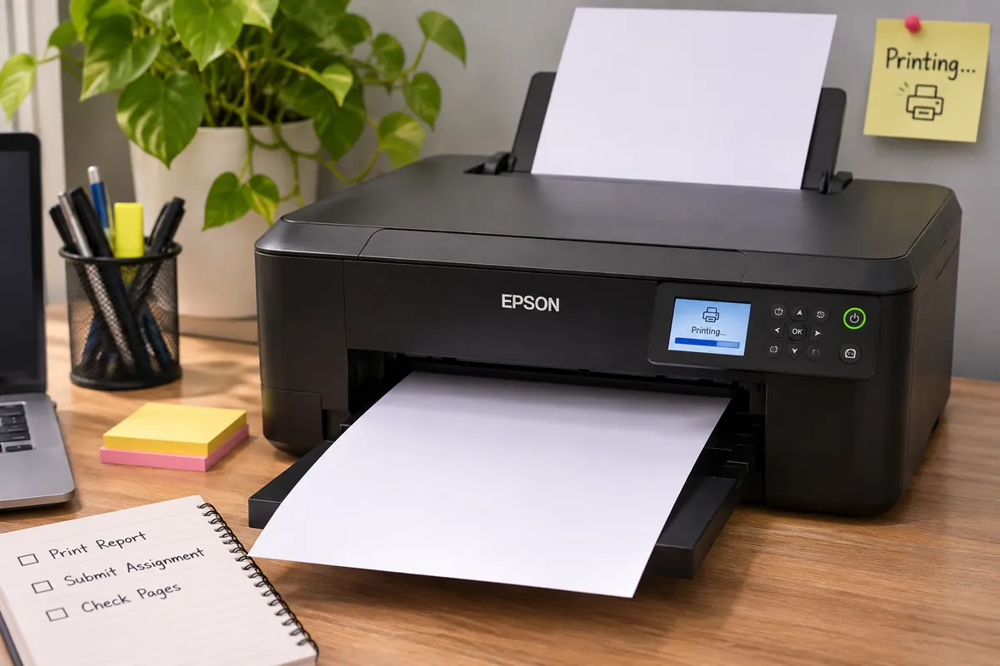
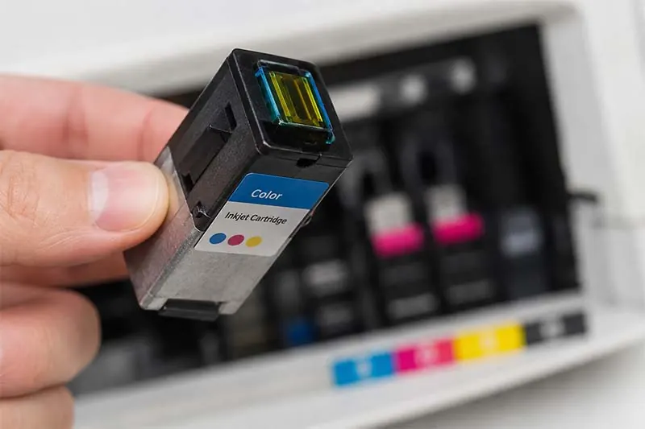

Printers
Why Is My Printer Printing Blank Pages? Causes and Fixes
Discover why your printer produces blank pages and learn practical checks for ink, toner, printheads, drivers, settings and paper.
Introduction: Start with the Simple Checks
When your printer is printing blank pages, it can be really confusing. You may get the impression that your printer is working, the computer will show as complete and yet there will be nothing printed. There are several common reasons why this happens. Most commonly it will be due to no ink/toner, a protective seal not having been removed, a clogged printhead and/or an empty document. However, it can be an issue with your driver, connection or internal components.

First determine if all the pages are blank. Many printers have an in-built test page or printer status report. Print this and if it prints correctly, it's likely that the issue is with your computer, application or document. If it is still printing blank, you can focus on your supplies and printer. Below is a list of what to look at:
1. Ink/Toner Levels
The most basic thing to check is that your printer actually has ink/toner. In inkjet printers if there is no ink in one or more tanks, the printer will still feed paper. With laser printers, you will get very light pages or blank pages if there is no toner, incorrectly fitted or not spreading.
Check the printer control panel, app or computer for your ink/toner levels. Note that ink levels are not always super accurate. Some printers will give you a rough guide. Remove your cartridge and check it is the correct model, is securely fitted and hasn't leaked or been damaged. If it's a new cartridge, ensure that all the packaging clips, tapes etc have been removed. Small strips of tape can be left on top of the ink/toner outlet and stop the printer from printing at all.
Do not touch any electrical connections or ink nozzles. If there is no ink, fit a compatible high quality cartridge. If you have a new toner cartridge, only shake gently if mentioned in the manufacturers instructions. Never force or open.
2. Cartridge Fitting
Sometimes a cartridge will appear to be in place but won't connect. Turn your printer off using the power button. Open the printer and check the fitting instructions for your exact model. Ensure that each cartridge is in the correct colour/position and that the lock is in place. Some printers will not recognise a cartridge and others will try to print but with no ink.
If you have changed the cartridges recently, try refitting them. Gently remove each, check they don't have any packaging on them and fit back in. Ensure that they click or lock in place. Don't remove cartridges constantly as this can cause air to get to the nozzles and waste ink. If you have a cartridge error on your printer, sort this out first.
3. Printhead Clean
Inkjet printers have small holes in the printhead where the ink goes onto the paper. If the printer hasn't been used for a while the ink can dry up and clog. If it's badly clogged you may get missing colours, lighter prints or blank pages.
Use the in-built maintenance menu or official software to do a nozzle check. This will help show if you're missing any colours. If there are gaps in the pattern, do one clean cycle using the printhead clean function and print another nozzle check. Leave the printer for the recommended time using manufacturer guidelines. Doing multiple cleaning cycles can use up a lot of ink and fill up the waste ink sponge.
If the standard cleaning doesn't work, refer to your printer's instructions for a deep clean or professional service. Don't pour any cleaning solution in the printer, scratch the printhead and never use any household chemicals. Some printers can have replaceable printheads whilst others may require a specialist.
4. Document, Printing Settings & Content
It could be your document causing the blank page. Open your document and ensure that you can see the text/images in the print preview. Check that you are printing the correct pages and that there are no blank pages. In a word processor you may have hidden text, white text on a white background, blank sections or odd page breaks.
Ensure that you have selected the correct printer, that you aren't printing to a virtual PDF printer and that the correct pages are selected. If your document is on a special paper size or odd format, try printing a basic 1 page document using standard settings. Try printing a basic text document or image from another application. If it's only one application that is giving you blank pages, update or repair the application and check the print options.
5. Reset Printer & Clear Queue
Sometimes the print queue can get stuck or there may be a faulty print. Cancel any queued prints and reset your printer and computer. Switch your printer off using the power button. Wait a moment and switch back on. Don't unplug your printer whilst it is carrying out maintenance or moving the printhead.
If it's a network printer, ensure that it is connected to the correct Wi-Fi/Ethernet connection. It is most likely that the print isn't being sent due to a connectivity issue. However, if it is a faulty print, you may get unexpected printing. If multiple computers are sending blank prints, look at your printer. If it's just one computer, look at the queue, driver and application.
6. Update/Reinstall Driver
The driver converts your document into a format that your printer can understand. If it is old, damaged or incorrect you may experience missing content, formatting issues or failure to print. Go to the official support page for your printer manufacturer and search for your exact model number. Download the driver for your operating system and printer connection.
If you can identify any duplicate or old printers, remove them. Install the latest driver following the manufacturer instructions. When prompted re-connect your printer. You may need to restart your computer. Don't download drivers from sites that include extra software. This is very useful if your printer is working on another computer.
7. Internal Reports & Different Device
Internal reports such as configuration, status or quality reports are great as they don't rely on your computer driver. If you print one of these and it is blank, it's likely to be an issue with your supplies, printhead, imaging components or another issue with your printer. If it prints correctly, try printing using another computer/mobile device. This will help narrow down the issue.
Follow the instructions in your manual to check your toner and imaging unit. Don't touch the drum or high voltage components inside. Lasers have hot and delicate components so let it cool down.

When to Get Professional Help
If you've checked your supplies, it's fitted correctly, done maintenance clean, tried a test report and checked your driver and it's still printing blank pages, it's time to get it serviced. If you keep getting cartridge errors, strange noises, leaking ink, burning smell, visible damage or a constant maintenance alert, stop trying to fix it. Don't open any sealed electrical/laser components.
A technician can check your printhead, carriage, ink delivery, imaging unit, transfer and control electronics. Take note of your model, error message, age (approximate), if you've changed cartridges recently and what you've tried. This will help speed up the diagnosis.
Conclusion
Your printer doesn't necessarily need replacing if it's printing blank pages. Start by checking your ink/toner, packaging seals and that it's fitted correctly. Use the maintenance functions on your printer, check your document and printing settings, clear your queue and update your official driver. Using an in-built test page will help identify if it's an issue with your computer or printer. If it's still printing blank or there are signs of damage, it's best to get it diagnosed by a professional. Often by going through the checks systematically you'll be able to get your printer printing again without having to buy extra cartridges or pay for repairs.
Need a hand with your printer or laptop?
Printerworld sells printers, laptops and genuine supplies, and repairs and services both. Bring in your model number and we will help you get it right.